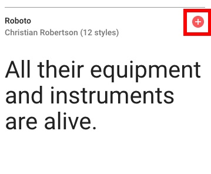

Expand this section to compare your work.

You can also compare your styles.css file with our answer key if the image is too difficult to read.
With layout complete, styling text adds the final polish to a website. Using a different font for sections of the web page adds interest and appeal.
This section will help guide you through the following steps:
Your users will use different browsers. Help your users have a consistent browsing experience by resetting all styles.
Add the following to the top of styles.css.
styles.css
/* Reset */
html, body, div, h1, h2, h3, h4, h5, h6, p, a,
img, li, aside, footer, nav, section {
margin: 0;
padding: 0;
border: 0;
font-size: 100%;
font: inherit;
}
The webpage now uses 100% of the width of the browser tab. But our drink menu doesn't look quite right! This is because there's not enough height in the element to fix the images. We'll fix it up soon.
Different fonts help define areas. But you have to have a backup plan. Let's select fonts for our web page and define fallback fonts as a contingency.
Navigate to Google Fonts and find a font to use for headers.
Click the red + in the upper right of that font's section.

At the bottom of your page, a snackbar with the text 1 Family Selected will appear.
Find a font to use for body text and select the font using the steps outlined above. The snackbar at the bottom of the page will say 2 Families Selected.
Click on the snackbar to open to instructions on using the font. Click on @IMPORT and copy the @import statement.

If you don't see the @IMPORT click on the arrow first.

Paste the @import statement at the top of your styles.css file, before the normalizing styles.
In the style declared for the body, add font for body text using the CSS rules specified by Google. In the example above, Google specified font-family: 'Neuton', serif;.
If you select a font with 2 word in the name you'll need to wrap the font name in quotation marks.
Add the font family for header text to the style you declared for all headers using Google's supplied CSS rule. Add the font to other styles if you want to override any other text, such as the text in the nav and footer.
Often you'll want to provide backup fonts for the page to fall back on in case it can't load the chosen font. A common fallback for sans-serif fonts might include Arial, Helvetica, sans-serif. For serif fonts it might include "Times New Roman", Times, serif as backups. You can add multiple fallbacks like this font-family: Neuton, "Times New Roman", Times, serif;
You can see the fallback fonts in action if you remove the "@import" statement for the fonts in your styles.css file, save your file, and view the page. Notice how the font changes.
Learn more by reading MDN documentation on font family.
Beautiful text adds final polish to websites. Let's resize and decorate text to polish LadyDev Bar & Grill website.
We always want to start with defining styles for global elements. In this case, we'll target p elements. Set the font-size to 1.25em.
Why use em instead of px for font size? em is a calculated font size based off of the parent's font value. Read more about the different ways to set font size in "Possible approaches" section of MDN documentation on font size.
Let's increase the size of the text for the header on top of the hero image starting with the h1 tag. We want to only target the h1 element. Set the font size of h1 to "5em" by adding font-size: 5em;.
Center align the hero text by using the text-align property. Set text-align: center; to the styles for class="hero-text".
The h1 text and the p text on the hero image look good, but the h2 text looks small. Set the font size of the h2 text only in the hero title to 1.5em.
The text color for the header and paragraph are different, and depending on the color you selected earlier, might not stand out enough. Pick out a color for the text on the hero image and apply it to class="hero-text". 
Why did the color apply to only paragraph text? This is because of cascading effects and CSS ordering rules. Class selectors have higher priority than element selectors, but we targeted the class .hero-text on the parent div element.
The color defined in .hero-text styles applies to all text inside the div, except the style for headers overrode the color. Since we didn't define a color for paragraph text, the color for the parent element (div) applies.
We need to increase specificity to apply colors to both paragraph and header text.
We'll create a style with more specifity. Create a new style for class="hero-text" after the existing one and move the color to the new style rules. You'll have two style rules for .hero-text, the last one with only color in it. You won't see any changes on your webpage yet.
We can use Child combinator to target child elements with greater specificity. To the style rules for .hero-text with color, change the selector to .hero-text > *.
The > operator signifies child elements. This applies to direct child elements of the HTML element with class="hero-text". The character * is the universal selector and means any HTML element instead of a specific one. This means
For elements with
class="hero-text", apply the style to all its direct children.
Using the descendant combinator, you could have also used a specific element, such as .hero-text > h1. This means
For elements with
class="hero-text", apply the style to its direct childh1elements
Read more about Child combinator.
There's more than one way to solve the problem of applying color to both paragraph and header text. Using what you know about CSS specificity and the Descendant combinator, think of some other ways you can apply the color. Feel free to talk it out with your mentor!
Increase the size of the h2 elements in the drinks menu to 3em.
.drinks h2.
Each drink title needs to be a little larger. In index.html, we see the drink titles are h3 elements. They also have a class="beverage" assigned to it. We can create a style for h3 with the class="beverage" by using the selector h3.beverage. Set the font size to 2em.
Notice there's no space between the element h3 and the class .beverage in the selector.
When there are no spaces between individual elements of selector, it means both individual elements apply. In this case, we're saying
For
h3elements that also have the class attributebeverage, apply the style.
There more than one way to target the drink titles styles. What are some other ways using what you've learned about Descendant and Child combinators? Feel free to talk it through with your mentor!
Set font size to the existing style for class="small-plates" to 1.5em.
The "Small plates" header title needs to be 2em and centered. Based on what we learned tonight, can you apply these styles?
.small-plates h2 to add the following styles:
Add font-size: 2em; to set size.
Add text-align: center; to center.
Navigation and footer information helps frame the main body of the site.
The following two styles apply to both the navigation and footer anchor text. Find the selector to apply the styles from your already created styles.
Pick out an a11y friendly contrasting color for the navigation and footer anchor tag text and set the color property.
Remove the hyperlink underline using text-decoration: none;.
The navigation text should be right aligned. In the nav style, add text-align: right;.
The navigation text in the hyperlink doesn't stand out enough. Make the text bold by adding font-weight: bold;.
Let's also make the navigation text larger by adding font-size: 1.5em;.
In the footer, the copyright text needs to be a contrasting color and both the copyright text and social icons centered. Using the style rules we already created and what we learned tonight, apply the styles to do so.
footer selector:
Add color to set color and add the same color you used for the anchor elements.
Add text-align: center; to center.
Add a little bit of space between the copyright text and social icons by adding a 15px margin between the two elements. Use what we learned tonight to do so.
footer p selector and add a 15px bottom margin.
Another way is to target footer ul and add a 15px top margin.
Another way is to use the Child combinator to target footer > p selector.
Can you think of other ways?
Save your file and view your page in Chrome. 
Share your success by posting a screenshot to Slack!

Compare your styles.css against the answer key for your work so far. It might look a little different depending on the color palette you chose.
You can also compare your styles.css file with our answer key if the image is too difficult to read.